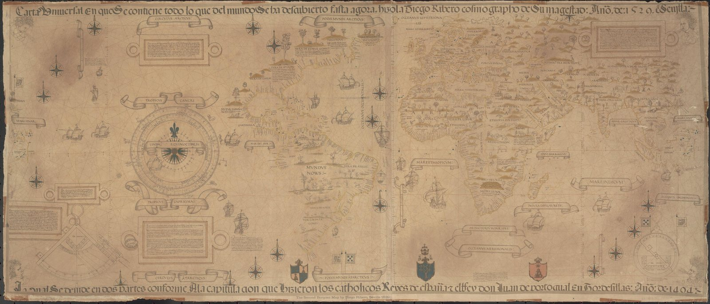

Type
CINZEL
Roman capitals, like the lettering of the map's cartouches.
EB Garamond for text · Space Mono for captions

● Flota de Indias · Seville–Veracruz ● Galeón de Manila · Acapulco–Manila
K · Carta Universal · the world in one network
Discover 200 years of Hispanic reunification thought. Get Hispanic Reunification: 200 Years of Theory and Praxis, the free pamphlet from De Indiis Editions.
Ribero drew the Carta Universal for the Casa de Contratación in Seville, the first scientific world map. Two centuries of fleets then turned it into a working system: silver from Veracruz to Seville, silk and porcelain from Manila to Acapulco. The page shows that the Hispanic world was a network, not a periphery, which is the Institute's whole argument.
CINZEL
Roman capitals, like the lettering of the map's cartouches.
EB Garamond for text · Space Mono for captions
A large-format print of the Carta with the routes in vermilion, and a "Seville–Manila" route tee.
About 90 lines of canvas 2D in main.js: Catmull-Rom curves through hand-placed points, dots moving along them. A data version (real voyages per year) would make it an explainer, not just a hero. With reduced motion the routes are drawn still.
This page is the without-Unicorn version: canvas routes and particles over a public-domain map.
1–2 days · high